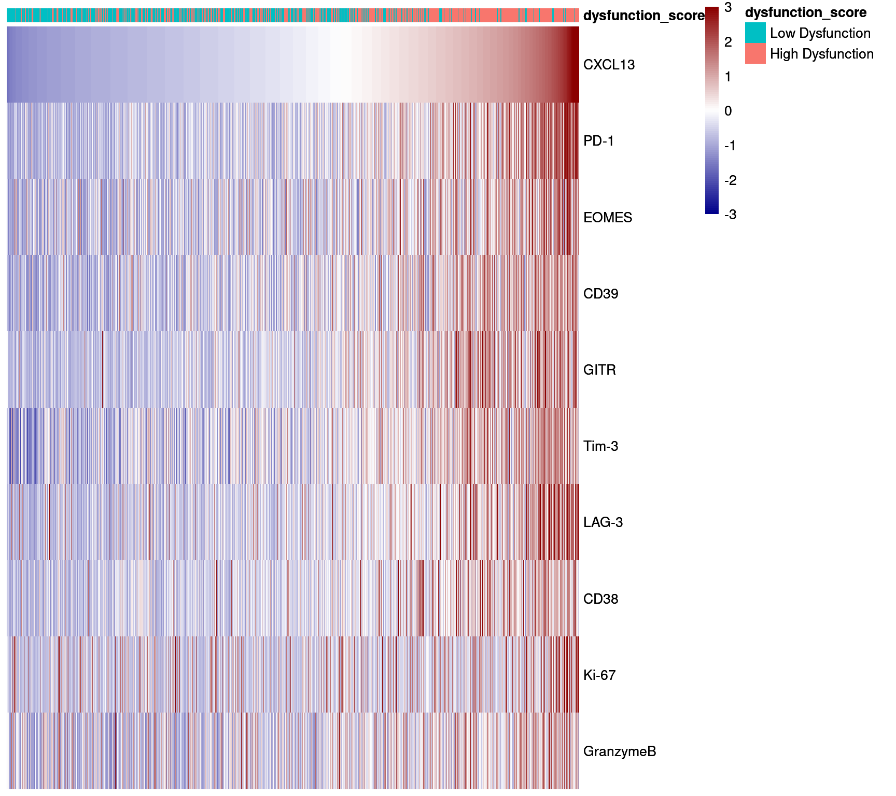

Last updated: 2022-02-10
Checks: 7 0
Knit directory: MelanomaIMC/
This reproducible R Markdown analysis was created with workflowr (version 1.7.0). The Checks tab describes the reproducibility checks that were applied when the results were created. The Past versions tab lists the development history.
Great! Since the R Markdown file has been committed to the Git repository, you know the exact version of the code that produced these results.
Great job! The global environment was empty. Objects defined in the global environment can affect the analysis in your R Markdown file in unknown ways. For reproduciblity it’s best to always run the code in an empty environment.
The command set.seed(20200728) was run prior to running the code in the R Markdown file. Setting a seed ensures that any results that rely on randomness, e.g. subsampling or permutations, are reproducible.
Great job! Recording the operating system, R version, and package versions is critical for reproducibility.
Nice! There were no cached chunks for this analysis, so you can be confident that you successfully produced the results during this run.
Great job! Using relative paths to the files within your workflowr project makes it easier to run your code on other machines.
Great! You are using Git for version control. Tracking code development and connecting the code version to the results is critical for reproducibility.
The results in this page were generated with repository version a2860df. See the Past versions tab to see a history of the changes made to the R Markdown and HTML files.
Note that you need to be careful to ensure that all relevant files for the analysis have been committed to Git prior to generating the results (you can use wflow_publish or wflow_git_commit). workflowr only checks the R Markdown file, but you know if there are other scripts or data files that it depends on. Below is the status of the Git repository when the results were generated:
Ignored files:
Ignored: .DS_Store
Ignored: .Rproj.user/
Ignored: Table_S4.csv
Ignored: analysis/.DS_Store
Ignored: analysis/._.DS_Store
Ignored: code/.DS_Store
Ignored: code/._.DS_Store
Ignored: data/.DS_Store
Ignored: data/._.DS_Store
Ignored: data/data_for_analysis/
Ignored: data/full_data/
Unstaged changes:
Modified: analysis/Figure_5.rmd
Modified: analysis/Supp-Figure_12.rmd
Modified: analysis/Supp-Figure_13.rmd
Modified: analysis/Supp-Figure_5.rmd
Note that any generated files, e.g. HTML, png, CSS, etc., are not included in this status report because it is ok for generated content to have uncommitted changes.
These are the previous versions of the repository in which changes were made to the R Markdown (analysis/Figure_4.rmd) and HTML (docs/Figure_4.html) files. If you’ve configured a remote Git repository (see ?wflow_git_remote), click on the hyperlinks in the table below to view the files as they were in that past version.
| File | Version | Author | Date | Message |
|---|---|---|---|---|
| Rmd | dfe5f09 | toobiwankenobi | 2022-02-09 | change Figure order |
| Rmd | f9a3a83 | toobiwankenobi | 2022-02-08 | clean repo for release |
| Rmd | 588dbb1 | toobiwankenobi | 2022-02-06 | Figure Order |
| Rmd | fa0f601 | toobiwankenobi | 2022-02-06 | clean Supp Fig code |
| Rmd | 3da15db | toobiwankenobi | 2021-11-24 | changes for revision |
| Rmd | c4e2793 | toobiwankenobi | 2021-08-04 | rearrange figure order to match pre-print |
| html | 4109ff1 | toobiwankenobi | 2021-07-07 | delete html files and adapt gitignore |
| Rmd | fc55711 | toobiwankenobi | 2021-07-07 | figure changes |
| html | fc55711 | toobiwankenobi | 2021-07-07 | figure changes |
| Rmd | 0f72ef1 | toobiwankenobi | 2021-05-11 | figure adaptations |
| html | 0f72ef1 | toobiwankenobi | 2021-05-11 | figure adaptations |
| Rmd | 4affda4 | toobiwankenobi | 2021-04-14 | figure adaptations |
| html | 4affda4 | toobiwankenobi | 2021-04-14 | figure adaptations |
| Rmd | 3203891 | toobiwankenobi | 2021-02-19 | change celltype names |
| html | 3203891 | toobiwankenobi | 2021-02-19 | change celltype names |
| Rmd | ee1595d | toobiwankenobi | 2021-02-12 | clean repo and adapt files |
| html | ee1595d | toobiwankenobi | 2021-02-12 | clean repo and adapt files |
| Rmd | 2e443a5 | toobiwankenobi | 2021-02-09 | remove files that are not needed |
| html | 3f5af3f | toobiwankenobi | 2021-02-09 | add .html files |
| Rmd | afa7957 | toobiwankenobi | 2021-02-08 | minor changes on figures and figure order |
| Rmd | 20a1458 | toobiwankenobi | 2021-02-04 | adapt figure order |
| Rmd | f9bb33a | toobiwankenobi | 2021-02-04 | new Figure 5 and minor changes in figure order |
| Rmd | 73caa28 | toobiwankenobi | 2021-01-12 | minor corrections |
| Rmd | 545c207 | toobiwankenobi | 2020-12-22 | clean up branch |
| Rmd | 58c40e5 | toobiwankenobi | 2020-10-19 | correct files that don’t work |
| Rmd | 1af3353 | toobiwankenobi | 2020-10-16 | add stuff |
| Rmd | a6b51cd | toobiwankenobi | 2020-10-14 | clean scripts, add new subfigures |
| Rmd | d8819f2 | toobiwankenobi | 2020-10-08 | read new data (nuclei expansion) and adapt scripts |
| Rmd | 2c11d5c | toobiwankenobi | 2020-08-05 | add new scripts |
This script generates plots for Figure 4.
knitr::opts_chunk$set(echo = TRUE, message= FALSE)
knitr::opts_knit$set(root.dir = rprojroot::find_rstudio_root_file())sapply(list.files("code/helper_functions", full.names = TRUE), source) code/helper_functions/calculateSummary.R
value ?
visible FALSE
code/helper_functions/censor_dat.R
value ?
visible FALSE
code/helper_functions/detect_mRNA_expression.R
value ?
visible FALSE
code/helper_functions/DistanceToClusterCenter.R
value ?
visible FALSE
code/helper_functions/findMilieu.R code/helper_functions/findPatch.R
value ? ?
visible FALSE FALSE
code/helper_functions/getInfoFromString.R
value ?
visible FALSE
code/helper_functions/getSpotnumber.R
value ?
visible FALSE
code/helper_functions/plotCellCounts.R
value ?
visible FALSE
code/helper_functions/plotCellFractions.R
value ?
visible FALSE
code/helper_functions/plotDist.R code/helper_functions/read_Data.R
value ? ?
visible FALSE FALSE
code/helper_functions/scatter_function.R
value ?
visible FALSE
code/helper_functions/sceChecks.R
value ?
visible FALSE
code/helper_functions/validityChecks.R
value ?
visible FALSE library(SingleCellExperiment)
library(reshape2)
library(tidyverse)
library(dplyr)
library(data.table)
library(ggplot2)
library(ComplexHeatmap)
library(colorRamps)
library(circlize)
library(RColorBrewer)
library(ggpubr)
library(ggbeeswarm)
library(gridExtra)
library(tidyr)
library(ggpmisc)
library(circlize)
library(dittoSeq)
library(scater)
library(cowplot)
library(cytomapper)
library(ggrepel)
library(rstatix)sce_rna = readRDS(file = "data/data_for_analysis/sce_RNA.rds")
sce_prot = readRDS(file = "data/data_for_analysis/sce_protein.rds")
sce_rna <- sce_rna[,sce_rna$Location != "CTRL"]
sce_prot <- sce_prot[,sce_prot$Location != "CTRL"]
# dysfunction stain
sce_dysfunction <- readRDS(file = "data/data_for_analysis/sce_dysfunction.rds")
# meta data
dat_relation = fread(file = "data/data_for_analysis/protein/Object relationships.csv",stringsAsFactors = FALSE)
dat_relation_rna = fread(file = "data/data_for_analysis/RNA/Object relationships.csv",stringsAsFactors = FALSE)
# image
image_mat_prot <- read.csv("data/data_for_analysis/protein/Image.csv")
# surv_dat
dat_survival_prot <- fread(file = "data/data_for_analysis/protein/clinical_data_protein.csv")# prepare data and add cellID
dat_relation$cellID_first <- paste("protein", paste(dat_relation$`First Image Number`, dat_relation$`First Object Number`, sep = "_"), sep = "_")
dat_relation$cellID_second <- paste("protein", paste(dat_relation$`Second Image Number`, dat_relation$`Second Object Number`, sep = "_"), sep = "_")
# add celltype status to first and second label
celltype_first <- data.frame(colData(sce_prot))[,c("cellID", "celltype", "celltype_clustered")]
colnames(celltype_first) <- c("cellID_first", "celltype_first", "celltype_clust_first")
celltype_second <- data.frame(colData(sce_prot))[,c("cellID", "celltype", "celltype_clustered")]
colnames(celltype_second) <- c("cellID_second", "celltype_second", "celltype_clust_second")
dat_relation <- left_join(dat_relation, celltype_first, by = "cellID_first")
dat_relation <- left_join(dat_relation, celltype_second, by = "cellID_second")
colnames(dat_relation)[5] <- "FirstImageNumber"# prepare data and add cellID
dat_relation_rna$cellID_first <- paste("RNA", paste(dat_relation_rna$`First Image Number`, dat_relation_rna$`First Object Number`, sep = "_"), sep = "_")
dat_relation_rna$cellID_second <- paste("RNA", paste(dat_relation_rna$`Second Image Number`, dat_relation_rna$`Second Object Number`, sep = "_"), sep = "_")
# add celltype status to first and second label
celltype_first <- data.frame(colData(sce_rna))[,c("cellID", "celltype_rf", "celltype_clustered")]
colnames(celltype_first) <- c("cellID_first", "celltype_first", "celltype_clust_first")
celltype_second <- data.frame(colData(sce_rna))[,c("cellID", "celltype_rf", "celltype_clustered")]
colnames(celltype_second) <- c("cellID_second", "celltype_second", "celltype_clust_second")
dat_relation_rna <- left_join(dat_relation_rna, celltype_first, by = "cellID_first")
dat_relation_rna <- left_join(dat_relation_rna, celltype_second, by = "cellID_second")
colnames(dat_relation_rna)[5] <- "FirstImageNumber"tumor_marker_protein <- c("pS6", "H3K27me3", "HLADR", "PDL1", "IDO1")
tumor_marker_rna <- c("B2M")
# rna data
dat_rna <- data.frame(t(assay(sce_rna[tumor_marker_rna, sce_rna$celltype == "Tumor"], "asinh")))
dat_rna$cellID <- rownames(dat_rna)
dat_rna <- left_join(dat_rna, data.frame(colData(sce_rna))[,c("cellID", "Tcell_density_score_image", "Description", "MM_location", "Location")])
# filter
dat_rna <- dat_rna %>%
filter(Location != "CTRL")
# mean per image
dat_rna <- dat_rna %>%
select(-cellID) %>%
group_by(Description, Tcell_density_score_image) %>%
summarise_if(is.numeric, mean, na.rm = TRUE)
# melt
dat_rna <- dat_rna %>%
reshape2::melt(id.vars = c("Description", "Tcell_density_score_image"), variable.name = "channel", value.name = "asinh")
# protein data
dat_prot <- data.frame(t(assay(sce_prot[tumor_marker_protein,, sce_prot$celltype == "Tumor"], "asinh")))
dat_prot$cellID <- rownames(dat_prot)
dat_prot <- left_join(dat_prot, data.frame(colData(sce_prot))[,c("cellID", "Tcell_density_score_image", "Description", "MM_location", "Location")])
# filter
dat_prot <- dat_prot %>%
filter(Location != "CTRL")
# mean per image
dat_prot <- dat_prot %>%
select(-cellID) %>%
group_by(Description, Tcell_density_score_image) %>%
summarise_if(is.numeric, mean, na.rm = TRUE)
# melt
dat_prot <- dat_prot %>%
reshape2::melt(id.vars = c("Description", "Tcell_density_score_image"), variable.name = "channel", value.name = "asinh")
# join both data sets
comb <- rbind(dat_prot, dat_rna)
# adjusted wilcox.test for groups
group_comparison <- list(c("absent", "high"), c("med", "high"))
stat.test <- comb %>%
group_by(channel) %>%
wilcox_test(data = ., asinh ~ Tcell_density_score_image) %>%
adjust_pvalue(method = "BH") %>%
add_significance("p.adj",cutpoints = c(0, 1e-04, 0.001, 0.01, 0.1, 1)) %>%
add_xy_position(x = "Tcell_density_score_image", dodge = 0.8, comparisons = group_comparison) %>%
filter(is.na(y.position) == FALSE)
comb$channel <- factor(comb$channel, levels = c("B2M", "HLADR", "pS6", "PDL1", "IDO1", "H3K27me3"))
# plot
p <- ggplot(comb, aes(x=Tcell_density_score_image, y=asinh,
group=Tcell_density_score_image)) +
geom_boxplot(alpha=0.2, lwd=1, aes(group=Tcell_density_score_image, fill = Tcell_density_score_image)) +
facet_wrap(~channel, scales = "free", ncol=3) +
stat_pvalue_manual(stat.test, label = "p.adj.signif", size = 7) +
geom_quasirandom(alpha=0.6, size=2, aes(group=Tcell_density_score_image, col = Tcell_density_score_image)) +
scale_color_discrete(guide = FALSE) +
theme_bw() +
theme(text = element_text(size=18),
axis.title.x = element_blank(),
axis.text.x = element_blank(),
axis.ticks.x = element_blank()) +
xlab("") +
ylab("Mean Count per Image (asinh)") +
scale_y_continuous(expand = expansion(mult = c(0.05, 0.15))) +
guides(fill=guide_legend(title="T cell Score", override.aes = c(lwd=0.5, alpha=1)))
leg <- get_legend(p)Warning: It is deprecated to specify `guide = FALSE` to remove a guide. Please
use `guide = "none"` instead.grid.arrange(p + theme(legend.position = "none"))grid.arrange(leg)all_mask <- loadImages(x = "data/full_data/rna/cpout/",
pattern = "ilastik_s2_Probabilities_equalized_cellmask.tiff")# we load the metadata for the images.
image_mat_rna <- as.data.frame(read.csv(file = "data/data_for_analysis/rna/Image.csv",stringsAsFactors = FALSE))
# we extract only the FileNames of the masks as they are in the all_masks object
cur_df <- data.frame(cellmask = image_mat_rna$FileName_cellmask,
ImageNumber = image_mat_rna$ImageNumber,
Description = image_mat_rna$Metadata_Description)
# we set the rownames of the extracted data to be equal to the names of all_masks
rownames(cur_df) <- gsub(pattern = ".tiff",replacement = "",image_mat_rna$FileName_cellmask)
# we add the extracted information via mcols in the order of the all_masks object
mcols(all_mask) <- cur_df[names(all_mask),]all_mask <- scaleImages(all_mask,2^16-1)# subset masks
mask_sub <- all_mask[mcols(all_mask)$Description %in% c("L11", "N3")]
sce_rna_sub <- sce_rna[,sce_rna$Description %in% c("L11","N3")]
plotCells(mask = mask_sub,
object = sce_rna_sub,
img_id = "Description", cell_id = "CellNumber",
colour_by = c("CD3","CD8", "Mart1", "SOX10", "B2M"),
colour = list(CD3 = c("black", "green"),
CD8 = c("black", "green"),
Mart1 = c("black", "blue"),
SOX10 = c("black", "blue"),
B2M = c("black", "red")),
display = "single",
exprs_values = "scaled_asinh",
scale = TRUE)tumor_dat <- data.frame(t(assay(sce_rna["B2M", sce_rna$celltype == "Tumor" & sce_rna$Location != "CTRL"], "asinh")))
tumor_dat$Description <- sce_rna[, sce_rna$celltype == "Tumor" & sce_rna$Location != "CTRL"]$Description
tumor_dat <- tumor_dat %>%
group_by(Description) %>%
summarise(mean_B2M = mean(B2M))
cur_df <- data.frame(colData(sce_rna)) %>%
filter(Location != "CTRL") %>%
group_by(Description, BlockID, celltype) %>%
summarise(n=n()) %>%
mutate(fraction = n/sum(n)) %>%
ungroup() %>%
complete(Description, celltype, fill = list(fraction = 0)) %>%
filter(celltype == "CD8+ T cell")
cur_df_chemokine <- data.frame(colData(sce_rna)) %>%
filter(Location != "CTRL") %>%
group_by(Description, chemokine) %>%
summarise(n=n()) %>%
reshape2::dcast(Description ~ chemokine, value.var = "n", fill = 0) %>%
mutate(fraction_positive = `TRUE` / (`FALSE` + `TRUE`))
tumor_dat <- left_join(tumor_dat, cur_df)
tumor_dat_chemokine <- left_join(tumor_dat, cur_df_chemokine)
# remove bad images and controls
tumor_dat <- tumor_dat
tumor_dat_chemokine <- tumor_dat_chemokine
# boxplot
a <- ggplot(tumor_dat, aes(y=mean_B2M, x=log10(fraction))) +
geom_point(size=3) +
geom_smooth(method = "lm", formula = y ~ x) +
stat_cor(aes(label = paste(..r.label.., ..p.label.., sep = "~`,`~")),
size=4) +
ylab("Mean B2M Expression (asinh)") +
xlab("Cytotoxic T cell Fraction (log10)") +
theme_bw() +
theme(text = element_text(size=12))
b <- ggplot(tumor_dat_chemokine, aes(y=mean_B2M, x=log10(fraction_positive))) +
geom_point(size=3) +
geom_smooth(method = "lm", formula = y~x) +
stat_cor(aes(label = paste(..r.label.., ..p.label.., sep = "~`,`~")),
parse = TRUE, size=4) +
ylab("Mean B2M Expression (asinh)") +
xlab("Chemokine-Expressing Cell Fraction (log10)") +
theme_bw() +
theme(text = element_text(size=12))Warning: Duplicated aesthetics after name standardisation: parsegrid.arrange(a,b, nrow=1)Warning: Removed 6 rows containing non-finite values (stat_smooth).Warning: Removed 6 rows containing non-finite values (stat_cor).CD8T_markers <- c("CXCL13","PD-1","CD39","Tim-3","LAG-3","GITR","EOMES","ICOS","CD38","GranzymeB","CD45RO","Ki-67","TCF7","CD45RA","CD57")
ex_markers <- c("CXCL13","PD-1","EOMES","CD39","GITR","Tim-3","LAG-3","CD38","Ki-67","GranzymeB")
CD8_sce <- sce_dysfunction[,sce_dysfunction$celltype %in% c("CD8_Tcell","CD8_CXCL13+_Tcell")]
CD8_sce$CXCL13 <- NULL
dittoHeatmap(CD8_sce,
genes = ex_markers,
annot.by = c("dysfunction_score"),
assay = "asinh",
show_colnames = FALSE,
order.by = "CXCL13",
cluster_rows=FALSE,
cluster_cols = FALSE,
heatmap.colors = colorRampPalette(c("dark blue", "white", "dark red"))(100),
annotation_colors = list(dysfunction_score = c(`Low Dysfunction` = "#00BFC4",
`High Dysfunction` = "#F8766D")),
breaks = seq(-3,3, length.out = 101))
# add marker expression to cells
marker_expression <- data.frame(t(assay(sce_prot[rowData(sce_prot)$good_marker,], "asinh")))
marker_expression$cellID <- rownames(marker_expression)
dat <- data.frame(colData(sce_prot))[,c("cellID", "celltype_clustered")]
dat <- left_join(dat, marker_expression)
dat$cellID <- NULL
# aggregate the groups
dat_aggr <- dat %>%
group_by(celltype_clustered) %>%
summarise_all(funs(mean))Warning: `funs()` was deprecated in dplyr 0.8.0.
Please use a list of either functions or lambdas:
# Simple named list:
list(mean = mean, median = median)
# Auto named with `tibble::lst()`:
tibble::lst(mean, median)
# Using lambdas
list(~ mean(., trim = .2), ~ median(., na.rm = TRUE))
This warning is displayed once every 8 hours.
Call `lifecycle::last_lifecycle_warnings()` to see where this warning was generated.# number of cells per group
dat_sum <- dat %>%
group_by(celltype_clustered) %>%
summarise(n=n()) %>%
filter(grepl("Tumor", celltype_clustered))
dat_sum <- data.frame(t(dat_sum))
# scale and center expression
dat_aggr[,-c(1)] <- scale(dat_aggr[,-c(1)])
# create matrix
m <- as.matrix(t(dat_aggr[,-c(1)]))
colnames(m) <- dat_aggr$celltype_clustered
ha <- HeatmapAnnotation("Numbers" = anno_text(format(round(as.numeric(dat_sum[2,])), nsmall = 0, big.mark = "'"),
which = "column",
rot = 90,
just = "center",
location = 0.5,
gp = gpar(fontsize=10,col = "black", border = "black")))
# row_split for markers
rowData(sce_prot)$heatmap_relevance <- ""
rowData(sce_prot[rowData(sce_prot)$good_marker,])$heatmap_relevance <- "Lineage"
rowData(sce_prot[grepl("PDL1|CD11b|CD206|PARP|CXCR2|CD11c|pS6|GrzB|IDO1|CD45RA|H3K27me3|TCF7|CD45RO|PD1|pERK|ICOS|Ki67", rownames(sce_prot)),])$heatmap_relevance <- "Other"
# subset m to only contain tumor clusters
m_sub <- m[,grepl("Tumor", colnames(m))]
# plot heatmap
h <- Heatmap(m_sub, name = "Scaled Expression",
row_split = rowData(sce_prot[rowData(sce_prot)$good_marker,])$heatmap_relevance,
cluster_columns = FALSE,
show_column_dend = FALSE,
column_names_gp = gpar(fontsize=12),
row_names_gp = gpar(fontsize=9),
column_names_rot = 90,
column_names_centered = FALSE,
show_column_names = TRUE,
top_annotation = ha,
col = colorRamp2(c(-3, 0, 3), c("blue", "white", "red")),
heatmap_legend_param = list(at = c(-3:3),legend_width = unit(6,"cm"), direction="horizontal",title_position = "topcenter"),
column_names_side = "top",
height = unit(10, "cm"),
width = unit(10,"cm"))
draw(h, heatmap_legend_side = "bottom")tumor_fractions <- data.frame(colData(sce_prot)) %>%
filter(celltype == "Tumor") %>%
group_by(PatientID, celltype_clustered) %>%
summarise(n=n()) %>%
mutate(fraction = n / sum(n)) %>%
complete(celltype_clustered, fill=list(fraction=0))
ggplot(tumor_fractions, aes(x=celltype_clustered, y=fraction)) +
geom_boxplot(outlier.shape = NA) +
geom_quasirandom(alpha=.2) +
theme_bw() +
theme(text=element_text(size=15)) +
xlab("") +
ylab("Fraction of\nTotal Tumor")# add dysfunction score to dat_relation
ex_score <- data.frame(colData(sce_prot)) %>%
distinct(ImageNumber, .keep_all = T) %>%
select(ImageNumber, dysfunction_score, MM_location)
ex_score$FirstImageNumber <- ex_score$ImageNumber
dat_relation <- left_join(dat_relation, ex_score[,c("FirstImageNumber", "dysfunction_score", "MM_location")])
sum <- dat_relation %>%
filter(celltype_first == "CD8+ T cell" & celltype_second == "Tumor" & !is.na(dysfunction_score)) %>%
group_by(FirstImageNumber, MM_location, dysfunction_score, celltype_first, celltype_clust_second) %>%
summarise(n=n()) %>%
reshape2::dcast(FirstImageNumber + MM_location + dysfunction_score + celltype_first ~ celltype_clust_second, value.var = "n", fill=0) %>%
reshape2::melt(id.vars = c("FirstImageNumber", "MM_location", "dysfunction_score", "celltype_first"), variable.name = "celltype", value.name = "n")
# calculate fractions for every image (makes it more comparable)
sum2 <- sum %>%
group_by(FirstImageNumber) %>%
mutate(fraction = n/sum(n)) %>%
ungroup()
stat.test <- sum2 %>%
group_by(celltype) %>%
wilcox_test(data = ., fraction ~ dysfunction_score) %>%
adjust_pvalue(method = "BH") %>%
add_significance("p.adj",cutpoints = c(0, 1e-04, 0.001, 0.01, 0.1, 1)) %>%
add_x_position(x = "celltype", dodge = 0.8)
sum2$cluster_number <- sapply(strsplit(as.character(sum2$celltype), "_"), "[", 2 )
ggplot(sum2, aes(x=cluster_number, y=fraction)) +
geom_boxplot(alpha=.2, lwd=1, aes(fill = dysfunction_score)) +
geom_quasirandom(alpha=.6, dodge.width=.75, size=1, aes(group = dysfunction_score, col=dysfunction_score)) +
stat_pvalue_manual(stat.test, label = "p.adj.signif", size = 7, y.position = 0.9) +
scale_color_discrete(guide = FALSE) +
theme_bw() +
theme(text = element_text(size = 16)) +
guides(fill=guide_legend(title="Dysfunction Score", override.aes = aes(lwd=0.5))) +
xlab("Tumor Cluster") +
ylab("Fraction of Interactions") +
ylim(0,1)Warning: It is deprecated to specify `guide = FALSE` to remove a guide. Please
use `guide = "none"` instead.tumor_marker_protein <- c("S100", "MiTF")
tumor_marker_rna <- c("Mart1", "pRB")
# rna data
dat_rna <- data.frame(t(assay(sce_rna[tumor_marker_rna, sce_rna$celltype == "Tumor"], "asinh")))
dat_rna$cellID <- rownames(dat_rna)
dat_rna <- left_join(dat_rna, data.frame(colData(sce_rna))[,c("cellID", "dysfunction_score", "Description", "MM_location")])
# filter
dat_rna <- dat_rna %>%
filter(dysfunction_score %in% c("High Dysfunction", "Low Dysfunction"))
# mean per image
dat_rna <- dat_rna %>%
dplyr::select(-cellID) %>%
group_by(Description, dysfunction_score) %>%
summarise_if(is.numeric, mean, na.rm = TRUE)
# melt
dat_rna <- dat_rna %>%
reshape2::melt(id.vars = c("Description", "dysfunction_score"), variable.name = "channel", value.name = "asinh")
# protein data
dat_prot <- data.frame(t(assay(sce_prot[tumor_marker_protein,, sce_prot$celltype == "Tumor"], "asinh")))
dat_prot$cellID <- rownames(dat_prot)
dat_prot <- left_join(dat_prot, data.frame(colData(sce_prot))[,c("cellID", "dysfunction_score", "Description", "MM_location")])
# filter
dat_prot <- dat_prot %>%
filter(dysfunction_score %in% c("High Dysfunction", "Low Dysfunction"))
# mean per image
dat_prot <- dat_prot %>%
dplyr::select(-cellID) %>%
group_by(Description, dysfunction_score) %>%
summarise_if(is.numeric, mean, na.rm = TRUE)
# melt
dat_prot <- dat_prot %>%
reshape2::melt(id.vars = c("Description", "dysfunction_score"), variable.name = "channel", value.name = "asinh")
# join both data sets
comb <- rbind(dat_prot, dat_rna)
stat.test <- comb %>%
group_by(channel) %>%
wilcox_test(data = ., asinh ~ dysfunction_score) %>%
adjust_pvalue(method = "BH") %>%
add_significance("p.adj",cutpoints = c(0, 1e-04, 0.001, 0.01, 0.1, 1)) %>%
add_xy_position(dodge = 0.8)
# plot
ggplot(comb, aes(x=dysfunction_score, y=asinh)) +
geom_boxplot(alpha=0.2, lwd=1, aes(fill=dysfunction_score)) +
geom_quasirandom(alpha=0.6, size=3, aes(col=dysfunction_score)) +
scale_color_discrete(guide = FALSE) +
theme_bw() +
theme(text = element_text(size=16),
legend.position = "none") +
facet_wrap(~channel, scales = "free") +
stat_pvalue_manual(stat.test, label = "p.adj.signif", size = 7) +
ylab("Mean Expression (asinh)") +
xlab("") +
scale_y_continuous(expand = expansion(mult = c(0.05, 0.2)))# fraction of exhausted cd8 per image
dysfunction <- data.frame(colData(sce_rna)) %>%
mutate(celltype2 = paste(celltype, CXCL13, sep = "_")) %>%
group_by(ImageNumber, celltype2) %>%
summarise(n=n()) %>%
reshape2::dcast(ImageNumber ~ celltype2, value.var = "n", fill = 0) %>%
reshape2::melt(id.vars = c("ImageNumber"), variable.name = "celltype2", value.name = "n") %>%
group_by(ImageNumber) %>%
mutate(fraction = n / sum(n)) %>%
filter(celltype2 == "CD8+ T cell_1") %>%
ungroup() %>%
select(ImageNumber, fraction)
# rna data
dat_rna <- data.frame(t(assay(sce_rna["S100", sce_rna$celltype == "Tumor"], "asinh")))
dat_rna$cellID <- rownames(dat_rna)
dat_rna <- left_join(dat_rna, data.frame(colData(sce_rna))[,c("cellID", "ImageNumber")])
# mean per image
dat_rna <- dat_rna %>%
select(-cellID) %>%
group_by(ImageNumber) %>%
summarise_if(is.numeric, mean, na.rm = TRUE)
# melt
dat_rna <- dat_rna %>%
reshape2::melt(id.vars = c("ImageNumber"), variable.name = "channel", value.name = "asinh")
# correlation plot
cur_dat <- left_join(dysfunction, dat_rna)
# high density images
cur_dat <- cur_dat[cur_dat$ImageNumber %in% unique(sce_rna[,colData(sce_rna)$dysfunction_score %in% c("High Dysfunction", "Low Dysfunction")]$ImageNumber),]
ggplot(cur_dat, aes(x=asinh, y=log10(fraction))) +
geom_point(size=3) +
geom_smooth(method="lm") +
stat_cor(method = "pearson",
aes(label = paste(..r.label.., ..p.label.., sep = "~`,`~")),
size = 5, cor.coef.name = "R", label.sep="\n", label.y.npc = "top", label.x.npc = "left") +
theme_bw() +
theme(text = element_text(size=15)) +
xlab("Mean S100 (asinh)") +
ylab("Fraction of Dysfunctional T cells\n(log10)")Warning: Removed 1 rows containing non-finite values (stat_smooth).Warning: Removed 1 rows containing non-finite values (stat_cor).
sessionInfo()R version 4.1.2 (2021-11-01)
Platform: x86_64-pc-linux-gnu (64-bit)
Running under: Ubuntu 20.04.3 LTS
Matrix products: default
BLAS/LAPACK: /usr/lib/x86_64-linux-gnu/openblas-pthread/libopenblasp-r0.3.8.so
locale:
[1] LC_CTYPE=en_US.UTF-8 LC_NUMERIC=C
[3] LC_TIME=en_US.UTF-8 LC_COLLATE=en_US.UTF-8
[5] LC_MONETARY=en_US.UTF-8 LC_MESSAGES=en_US.UTF-8
[7] LC_PAPER=en_US.UTF-8 LC_NAME=C
[9] LC_ADDRESS=C LC_TELEPHONE=C
[11] LC_MEASUREMENT=en_US.UTF-8 LC_IDENTIFICATION=C
attached base packages:
[1] grid stats4 stats graphics grDevices utils datasets
[8] methods base
other attached packages:
[1] rstatix_0.7.0 ggrepel_0.9.1
[3] cytomapper_1.6.0 EBImage_4.36.0
[5] cowplot_1.1.1 scater_1.22.0
[7] scuttle_1.4.0 dittoSeq_1.6.0
[9] ggpmisc_0.4.5 ggpp_0.4.3
[11] gridExtra_2.3 ggbeeswarm_0.6.0
[13] ggpubr_0.4.0 RColorBrewer_1.1-2
[15] circlize_0.4.13 colorRamps_2.3
[17] ComplexHeatmap_2.10.0 data.table_1.14.2
[19] forcats_0.5.1 stringr_1.4.0
[21] purrr_0.3.4 readr_2.1.2
[23] tidyr_1.2.0 tibble_3.1.6
[25] ggplot2_3.3.5 tidyverse_1.3.1
[27] reshape2_1.4.4 SingleCellExperiment_1.16.0
[29] SummarizedExperiment_1.24.0 Biobase_2.54.0
[31] GenomicRanges_1.46.1 GenomeInfoDb_1.30.1
[33] IRanges_2.28.0 S4Vectors_0.32.3
[35] BiocGenerics_0.40.0 MatrixGenerics_1.6.0
[37] matrixStats_0.61.0 dplyr_1.0.7
[39] workflowr_1.7.0
loaded via a namespace (and not attached):
[1] utf8_1.2.2 shinydashboard_0.7.2
[3] tidyselect_1.1.1 htmlwidgets_1.5.4
[5] BiocParallel_1.28.3 munsell_0.5.0
[7] ScaledMatrix_1.2.0 codetools_0.2-18
[9] withr_2.4.3 colorspace_2.0-2
[11] highr_0.9 knitr_1.37
[13] rstudioapi_0.13 ggsignif_0.6.3
[15] labeling_0.4.2 git2r_0.29.0
[17] GenomeInfoDbData_1.2.7 farver_2.1.0
[19] pheatmap_1.0.12 rhdf5_2.38.0
[21] rprojroot_2.0.2 vctrs_0.3.8
[23] generics_0.1.2 xfun_0.29
[25] R6_2.5.1 doParallel_1.0.16
[27] clue_0.3-60 rsvd_1.0.5
[29] locfit_1.5-9.4 bitops_1.0-7
[31] rhdf5filters_1.6.0 DelayedArray_0.20.0
[33] assertthat_0.2.1 promises_1.2.0.1
[35] scales_1.1.1 beeswarm_0.4.0
[37] gtable_0.3.0 beachmat_2.10.0
[39] processx_3.5.2 rlang_1.0.0
[41] MatrixModels_0.5-0 systemfonts_1.0.3
[43] splines_4.1.2 GlobalOptions_0.1.2
[45] broom_0.7.12 yaml_2.2.2
[47] abind_1.4-5 modelr_0.1.8
[49] backports_1.4.1 httpuv_1.6.5
[51] tools_4.1.2 ellipsis_0.3.2
[53] raster_3.5-15 jquerylib_0.1.4
[55] ggridges_0.5.3 Rcpp_1.0.8
[57] plyr_1.8.6 sparseMatrixStats_1.6.0
[59] zlibbioc_1.40.0 RCurl_1.98-1.5
[61] ps_1.6.0 GetoptLong_1.0.5
[63] viridis_0.6.2 haven_2.4.3
[65] cluster_2.1.2 fs_1.5.2
[67] magrittr_2.0.2 magick_2.7.3
[69] SparseM_1.81 reprex_2.0.1
[71] whisker_0.4 hms_1.1.1
[73] mime_0.12 evaluate_0.14
[75] fftwtools_0.9-11 xtable_1.8-4
[77] jpeg_0.1-9 readxl_1.3.1
[79] shape_1.4.6 compiler_4.1.2
[81] crayon_1.4.2 htmltools_0.5.2
[83] mgcv_1.8-38 later_1.3.0
[85] tzdb_0.2.0 tiff_0.1-11
[87] lubridate_1.8.0 DBI_1.1.2
[89] dbplyr_2.1.1 Matrix_1.4-0
[91] car_3.0-12 cli_3.1.1
[93] parallel_4.1.2 pkgconfig_2.0.3
[95] getPass_0.2-2 sp_1.4-6
[97] terra_1.5-17 xml2_1.3.3
[99] foreach_1.5.2 svglite_2.0.0
[101] vipor_0.4.5 bslib_0.3.1
[103] XVector_0.34.0 rvest_1.0.2
[105] callr_3.7.0 digest_0.6.29
[107] rmarkdown_2.11 cellranger_1.1.0
[109] DelayedMatrixStats_1.16.0 shiny_1.7.1
[111] quantreg_5.87 rjson_0.2.21
[113] nlme_3.1-155 lifecycle_1.0.1
[115] jsonlite_1.7.3 Rhdf5lib_1.16.0
[117] carData_3.0-5 BiocNeighbors_1.12.0
[119] viridisLite_0.4.0 fansi_1.0.2
[121] pillar_1.7.0 lattice_0.20-45
[123] fastmap_1.1.0 httr_1.4.2
[125] glue_1.6.1 png_0.1-7
[127] iterators_1.0.13 svgPanZoom_0.3.4
[129] stringi_1.7.6 sass_0.4.0
[131] HDF5Array_1.22.1 BiocSingular_1.10.0
[133] irlba_2.3.5